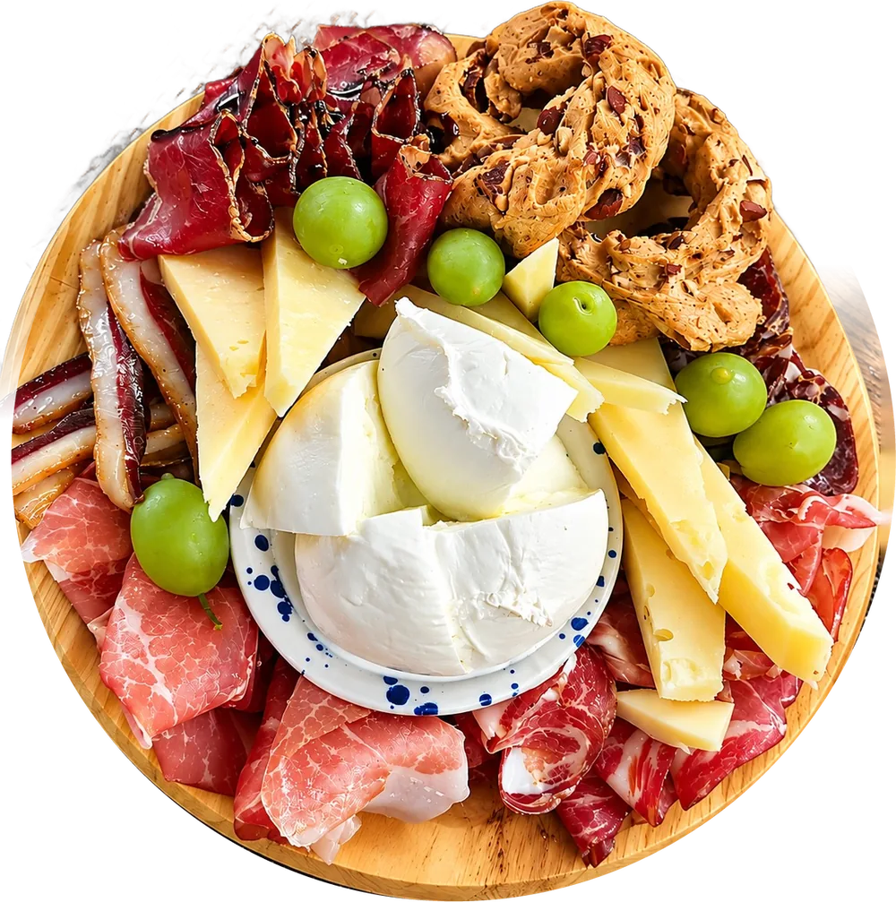
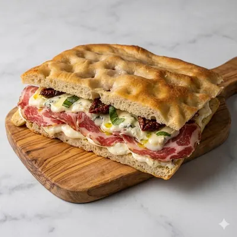
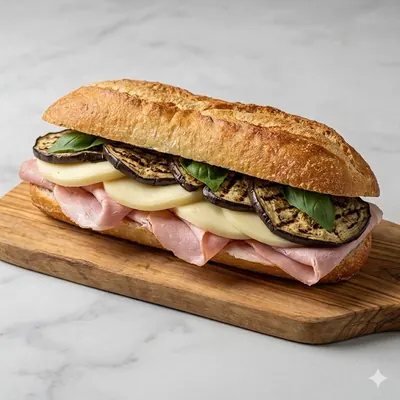
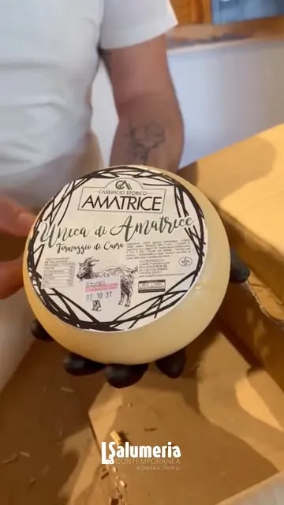
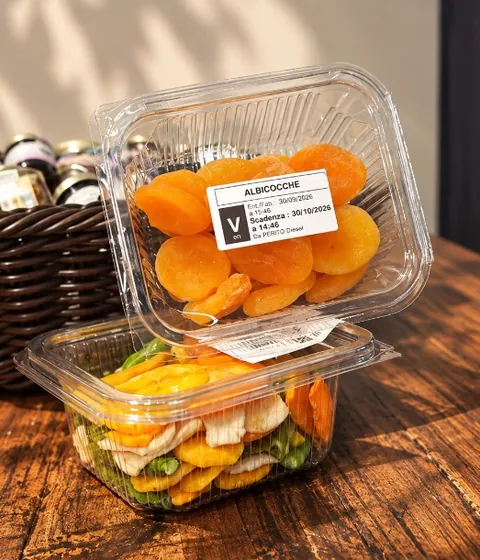
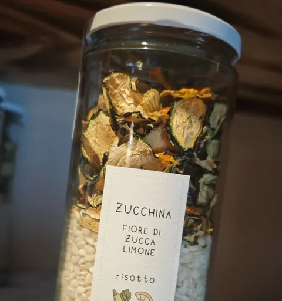

Più venduta
Bresaola, rucola e grana
Bresaola, rucola e scaglie di grana.
Viale Mellusi 15, Benevento
Viale Mellusi 15 · Benevento · 333 581 5144
Salumeria e gastronomia · Benevento
Il banco di Gianluca in Viale Mellusi: taglieri per l'aperitivo, focacce farcite al momento, piatti del giorno e buffet per le tue feste.
4,7 su Google · 36 recensioni 97% di soddisfatti su Glovo

Gianluca D'Aronzoil tuo salumiere, dietro al banco ogni giorno
Come vuoi gustarci
Salumi affettati al momento, nella quantità che vuoi, e i consigli di Gianluca sugli abbinamenti.
Scopri il banco →Un tagliere e un calice di vino campano all'aperto. Venerdì e sabato fino a mezzanotte.
L'aperitivo →Scegli qui sotto, mandi l'ordine su WhatsApp e lo trovi pronto al banco, senza fila.
Scegli dal menù →Focacce, panini e vini a domicilio con Glovo, dove il 97% dei clienti è soddisfatto.
Apri Glovo ↗Il pranzo veloce, ma come si deve
Tocca «Aggiungi», scegli il pane e manda l'ordine su WhatsApp: lo trovi pronto al banco. Oppure fattelo portare a casa con Glovo.
Bresaola, rucola e scaglie di grana.

Pomodoro e mozzarella di bufala: semplice e fresca.

Capocollo e gorgonzola dolce, sapido e cremoso.

Il classico che mette tutti d'accordo.

Mortadella, stracciatella e pesto di pistacchio.

Salame Milano, caciocavallo e pomodori secchi.

Prosciutto crudo e mozzarella di bufala.

Prosciutto cotto, provola e melanzane grigliate.
Foto illustrative · prezzi al banco e su Glovo.

Rosetta croccante, polpo scottato al punto giusto e verdura saltata. Un morso e sei già al mare.
Dicono di noi
36 recensioni su Google
97% di clienti soddisfatti su Glovo
«Abbiamo mangiato una focaccia farcita super! Fresca e fragrante, ingredienti di primissima qualità.»
«Ci siamo stati più volte e ogni volta è una conferma. Un posto davvero speciale, con i tavoli per l'aperitivo.»
«Staff super disponibile, gentile e veloce. Abbiamo fatto un apericena e non siamo riusciti a finire tutto.»

Dietro al banco
Gianluca sceglie uno a uno i prodotti del banco, e se gli chiedi di un formaggio ti racconta da dove viene, chi lo fa e con cosa abbinarlo. Lo vedi anche su Instagram, quando apre le casse dei nuovi arrivi. A Benevento, qui la spesa si fa ancora parlando.
Un assaggio prima di comprare non si nega a nessuno.
Freschi e a km 0Frutta e verdura di stagione da produttori del Sannio, mozzarella e ricotta di giornata.
Cucina di giornataUn primo, un secondo e i contorni, diversi ogni giorno.
Asporto e consegna a domicilioPassa a prendere il tuo ordine o fattelo portare a casa con Glovo.
Sfoglia il banco
Sul bancone in questi giorni

Norvegese, lavorato artigianalmente: delicato ed elegante.

Dai filetti alla colatura di alici, per chi cerca la materia prima.

Quando la materia prima è eccellente, basta poco.

Le ultime forme arrivate: chiedi un assaggio al banco.

Albicocche e mix di frutta: sapori intensi, da sgranocchiare.

Zucchine alla crudaiola, peperoni, pomodori secchi e sughi pronti.

Zucchina, fiori di zucca e limone; sale con arancia, lavanda e rosmarino.

Catering e buffet
Lauree, compleanni, aperitivi in ufficio e pranzi delle feste: dicci quanti siete e cosa vi piace, noi prepariamo taglieri e piatti pronti con i prodotti del banco.
Orari e indirizzo a Benevento
Viale Mellusi 15
| Lunedì | 9:00 – 22:00 |
|---|---|
| Martedì | 9:00 – 16:00 |
| Mercoledì | 9:00 – 22:00 |
| Giovedì | 9:00 – 22:00 |
| Venerdì | 9:00 – 24:00 |
| Sabato | 9:00 – 24:00 |
| Domenica | Chiuso |